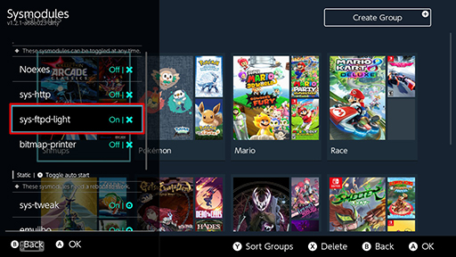

Sys-ftpd-light
sys-ftpd-light is a lightweight FTP server that runs in the background on your Nintendo Switch
How to Enable¶
it can be enabled or disabled either via a toolbox.nro or a hotkey combination the default being + +
Toolbox¶
check sys-ftpd-light is enabled on your switch before setting up nx-gic & any time you transfer either enable via you're desired homebrew toolbox


Tesla-Menu¶
Tesla-Menu with a sys-modules plugin

login credentials¶
be sure to add sys-ftpd-light credentials either before extracting it to the root of your SD card or by editing the config.ini
located on sd card :/config/sys-ftpd/ of the switch

Finding your switch IP¶
If you are unsure what your switch IP is you can locate the ip in system settings > Internet